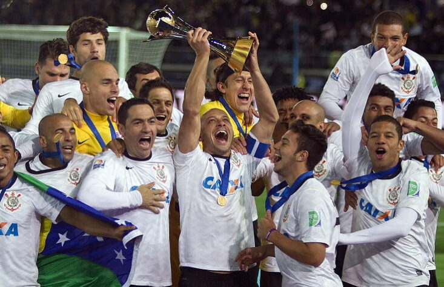

A história do Corinthians é marcada por grandes conquistas, momentos de superação e uma enorme paixão de sua torcida. Fundado em 1910, o Sport Club Corinthians Paulista se tornou um dos clubes mais populares e tradicionais do Brasil e do mundo, sendo conhecido por sua base de fãs fervorosa, a Fiel Torcida. A seguir, vamos ver um resumo da história desse gigante do futebol:
Fundação e Primeiros Anos (1910-1920)
O Corinthians foi fundado no dia 1º de setembro de 1910, por um grupo de operários da cidade de São Paulo, liderado por Raul Ramos de Oliveira, um dos primeiros idealizadores do clube. Eles se inspiraram no nome de um time inglês, o Corinthian FC, que era conhecido por sua postura esportiva e por não ser vinculado a interesses financeiros ou profissionais.
O clube inicialmente jogava futebol amador, e os primeiros anos foram marcados por dificuldades financeiras e até uma série de desentendimentos entre a diretoria e jogadores. No entanto, o Corinthians logo ganhou força e começou a se destacar no futebol paulista.
Em 1914, o clube conquistou seu primeiro título importante, o Campeonato Paulista, sendo um marco na história do time.
Popularidade e Fase de Expansão (1930-1950)
A década de 1930 foi um período de crescimento para o Corinthians. Em 1930, o clube conseguiu seu segundo título do Campeonato Paulista, e a torcida corinthiana começou a se tornar cada vez mais popular.
Uma das grandes viradas da história do clube ocorreu em 1938, quando o Corinthians, com o apoio de sua fiel torcida, superou o favoritismo do time do Palmeiras e conquistou o título de Campeão Paulista.
Nos anos seguintes, o Corinthians seguiu conquistando títulos e ampliando sua base de fãs. Com isso, o clube passou a ser uma das maiores forças do futebol paulista e brasileiro. A década de 1940 foi marcada por grandes disputas com outros clubes de São Paulo, como o Palmeiras e o São Paulo FC.
Os Anos de Ouro (1950-1970)
A década de 1950 e 1960 foi marcada por uma geração de grandes jogadores, como Jair da Costa, Rivelino e Vavá. O time conseguiu várias vitórias, incluindo o Campeonato Paulista de 1954, que foi um dos mais difíceis da história, e também o título do Torneio Rio-São Paulo, em 1966.
Uma das maiores glórias dessa época foi o título Campeão Paulista de 1977, que foi muito significativo porque o Corinthians não conquistava o campeonato estadual desde 1954. Esse título encerrou um jejum de 23 anos sem grandes conquistas, e foi celebrado de forma memorável pela Fiel Torcida.
A Democracia Corintiana (1980-1990)
A década de 1980 foi uma das mais marcantes da história do Corinthians, principalmente por causa da chamada Democracia Corintiana. Durante esse período, liderada por jogadores como Sócrates, Casagrande e Wladimir, o Corinthians passou a adotar um modelo de gestão participativa, em que os jogadores tinham voz ativa nas decisões do clube. Essa filosofia inovadora foi importante para a evolução do futebol brasileiro e ajudou o Corinthians a se tornar um time ainda mais respeitado.
No campo, o Corinthians conquistou o Campeonato Paulista de 1982 e 1983, mas a década também ficou marcada por momentos de frustração, já que o time não conseguia conquistar títulos maiores a nível nacional ou internacional.
O Primeiro Título Mundial (2000)
O ano de 2000 foi um marco histórico para o Corinthians, pois o clube venceu o Campeonato Mundial de Clubes da FIFA. Essa competição foi realizada no Brasil e reuniu clubes de várias partes do mundo. O Corinthians venceu o VASCO DA GAMA na final, e com isso, o clube conquistou seu primeiro título mundial, em uma época onde os times brasileiros ainda não estavam dominando tanto o cenário internacional.
Essa conquista foi histórica não apenas pela taça em si, mas também pela primeira vez que o Corinthians teve o reconhecimento mundial.
O Renascimento do Corinthians (2000-2010)
O Corinthians passou por um período de instabilidade nas primeiras décad
as do século 21, mas conseguiu se reerguer a partir de 2008. Em 2009, o clube trouxe o Ronaldo Fenômeno para o time, um dos maiores jogadores da história do futebol mundial. Ronaldo ajudou o Corinthians a conquistar o Campeonato Paulista de 2009 e, no ano seguinte, o time faturou o Campeonato Brasileiro de 2011.
A Conquista da Libertadores (2012)
Após anos de tentativas frustradas, o Corinthians finalmente conquistou sua primeira Copa Libertadores da América em 2012. A vitória, diante do Boca Juniors, na final, foi uma das mais emocionantes para os torcedores. O time de Tite fez uma campanha impecável, sem perder uma partida sequer, e levou o título de forma incontestável. Esse título foi muito aguardado pela torcida corinthiana, que finalmente viu o time conquistar o maior troféu de clubes da América do Sul.
Campeonato Mundial de Clubes (2012)
Ainda em 2012, o Corinthians conquistou o Mundial de Clubes da FIFA em uma campanha histórica. Após vencer o Chelsea na final, o Corinthians se tornou campeão mundial pela segunda vez em sua história, consolidando sua posição como um dos clubes mais vitoriosos do futebol mundial.
O Corinthians Atual
Nos últimos anos, o Corinthians seguiu sendo um dos clubes mais fortes do Brasil, com títulos importantes, como o Campeonato Paulista de 2017 e 2018, além de participações constantes na Copa Libertadores. O time segue sendo um dos mais populares e com uma das maiores torcidas do Brasil, sempre contando com o apoio incondicional da sua imensa Fiel Torcida.
Curiosidades sobre a História do Corinthians
A Fiel Torcida: A torcida do Corinthians é uma das maiores do Brasil, com estimativas que ultrapassam os 30 milhões de torcedores. Sua paixão e lealdade são famosas em todo o país e são parte da identidade do clube.
Estádio: O Arena Corinthians, inaugurado em 2014, é um dos estádios mais modernos do Brasil e foi uma das sedes da Copa do Mundo de 2014. O estádio é um verdadeiro símbolo do clube, localizado na Zona Leste de São Paulo.
Maior Jejum de Títulos: O maior jejum de títulos do Corinthians foi de 23 anos, entre 1954 e 1977, quando o time não conquistou o Campeonato Paulista, apesar de seu tamanho e tradição.
Títulos Mundiais: O Corinthians é um dos poucos clubes brasileiros a conquistar o Mundial de Clubes em duas ocasiões, em 2000 e 2012.
Com mais de 100 anos de história, o Corinthians é, sem dúvida, um dos maiores clubes do futebol brasileiro, com uma história repleta de emoções, conquistas e uma torcida que nunca deixa de apoiar o time.
Curiosidades
- O Corinthians tem mais de 30 milhões de torcedores.
- Foi campeão mundial em 2000 e 2012.
- O time é conhecido por sua enorme torcida, a Fiel.
Ídolos
Alguns dos maiores ídolos do clube incluem jogadores como Ronaldo, Sócrates, Rivelino e Marcelinho Carioca.
Títulos
O Corinthians é vencedor de muitos títulos nacionais e internacionais, incluindo a Copa Libertadores e o Mundial de Clubes da FIFA.
Galeria
